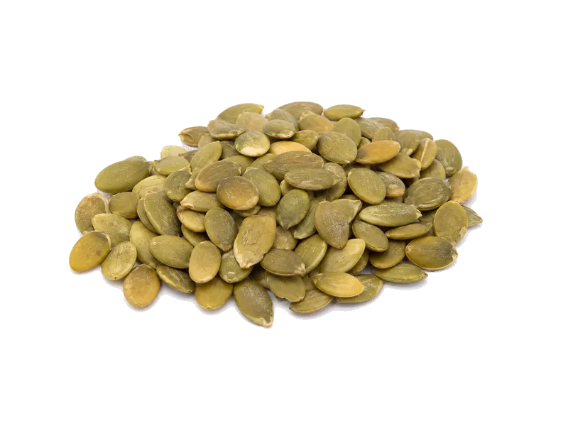

Orzechy
Pestki dyni
Pestki dyni: 30 g białka, 559 kcal, 11 g węglowodanów i 49 g tłuszczu na 100 g. Kategoria: Orzechy.
Kalorie559 kcalna 100 g
Białko / proteiny30 g
Węglowodany11 g
Tłuszcz49 g
Cena (szac.)~3,83 złza 100 g
Ceny zaktualizowano: maj 2026 (szacunek — ceny w popularnych supermarketach)
Porcja: garść (30g)
| Kalorie | 168 kcal |
|---|---|
| Białko | 9 g |
| Węglowodany | 3.3 g |
| Tłuszcz | 14.7 g |
| Cena (szac.) | ~1,15 zł |
Szczegółowe składniki odżywcze na 100 g
| Wartość energetyczna (kalorie) | 559 kcal |
|---|---|
| Białko (proteiny) | 30 g |
| Węglowodany | 11 g |
| Tłuszcz | 49 g |
| Tłuszcze nasycone | 8.5 g |
| Tłuszcze nienasycone | 40.5 g |
| Witaminy i minerały | Cynk, Magnez, Witamina E |
| Współczynnik kcal / 1 g białka | 18.6 |
| Cena produktu (szac. za 100 g) | ~3,83 zł |
| Cena za 100 g białka (szac.) | ~12,78 zł |